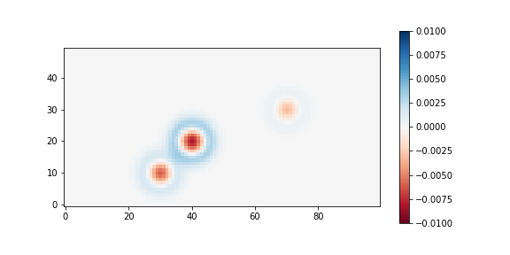

HW astropy.fits#
Problem Set 1 [6 points]#
Answer the following [2 points each]
Search for the official documentation of
astropy.io.fits. What is the URL to this doc?Read the doc. You don’t have to read all but just skim through it and grasp an idea how
astropy.io.fitsis used, how the header is accessed, etc. Click many links in the doc, and familiarize yourself to it. (Answer: I did|I didn’t)Go to a doc about “Cutout images”. You may have to have basic understanding of WCS as well as python. Find references by yourself. Also for WCS, you may have to learn
astropy.wcsby clicking many links provided there. Familiarize yourself with the idea ofCutout2Dand its usage. (Answer: I did|I didn’t)
Problem Set 2 [22 points]#
Here we will learn how to use astropy. Start solving the problems after running the code below:
import numpy as np
from pathlib import Path
from astropy.io import fits
from astropy.nddata import CCDData
np.random.seed(123)
SAVEPATH = Path(".") # <-- You may tune here for your computer
data = np.random.rand(100, 100)
While answering the problems, follow these rules:
Never use
fororwhileloop.You should not import any other packages.
Answer to each problem must be a one-line of python code.
For each problem, I gave hints. It is also homework for you to search for those on google.
Problems#
Make a primary HDU object called
hduwith data isdata.Hint: use
fits.PrimaryHDU
Change the
dtypeofhdu.datainto float 32.Hint: to change the dtype, you can do
HDU_object.data = HDU_object.data.astype(dtype).Hint: you can use
np.float32for float 32.
Save it as
SAVEPATH / "test.fits".Hint: use
.writeto()
Open the fits file in
HDUListtype. Let’s call thishdul.Hint: use
fits.open
Print the information of that
HDUList.Hint: use
.info()
Check whether the loaded fits data is identical to
data.Hint: use
np.testing.assert_allcloseto the 0-th extension of theHDUListyou loaded.
Extract the header of the 0-th extension of
hdul. Call ithdr_hdu.Hint: use
.headerNote: Even though you didn’t specify any header information, the header is automatically generated when you saved
hdu.
Open the fits file as
CCDData. Call thisccd.Hint: use
CCDData.readHint: you may use any unit you want.
Check whether the loaded ccd data is identical to
data.Hint: use
np.testing.assert_allcloseto theccd.data.
Extract the header of the
ccd. Call ithdr_ccd.Hint: use
.headerNote: Even though you didn’t specify any header information, the header is automatically generated when you saved
hdu.
Check whether the two headers (
hdr_hdul)
Problem Set 3 [28 points]#
Prepare the FITS file
SNUO_STX16803-kw4-4-4-20190602-135247-R-60.0_bdfw.fitsfrom our Tutorial Data link (see README of our lecture note repo). As indicated in astronomy.net homework, this file has intentionally broken WCS information, but it does not matter for the problems below.Please use python 3.6+ (Never use python 2).
For other packages: Although I didn’t run all the tests, likely there will be no problem if you use decently recent versions of any packages used in the homework (any version released after 2017).
Please run the following code before you start (MODIFY APPROPRIATELY):
# If you are not using Jupyter, comment the "%" lines below
%config InlineBackend.figure_format = 'retina'
%matplotlib notebook # comment this line if you encounter error.
from pathlib import Path
from astropy.io import fits
from astropy.nddata import Cutout2D
from astropy.wcs import WCS
from matplotlib import pyplot as plt
from matplotlib import rcParams
from mpl_toolkits.axes_grid1 import ImageGrid
# Modify below to the relative path to the directory where you saved the FITS file.
DATADIR = Path("../../Tutorial_Data/")
# We need to do it in a separate cell. See:
# https://github.com/jupyter/notebook/issues/3385
plt.style.use('default')
rcParams.update({'font.size':12})
allfits = list(DATADIR.glob("SNUO*_bdfw.fits"))
imgrid_kw = dict(
nrows_ncols=(1, 1),
axes_pad=(0.45, 0.15),
label_mode="1",
share_all=True,
cbar_location="right",
cbar_mode="each",
cbar_size="7%",
cbar_pad="2%"
)
Problems#
Answer the following questions. Provide codes. Also provide results if something is printed out or plotted from the code. [2 pts each, unless specified]
Set
fpathas the path to the file.
Hint:
fpath = allfits[<an int>]
Set
hdulas an HDUList object of that file.Hint:
hdul = fits.open(?)
Print out the information of the
hdul.Hint:
hdul.info()
How many header keywords are there in the 0-th extension of
hdul?Print out the header of the 0th HDU.
Hint:
hdul[0].?orhdul["PRIMARY"].?
From the header, what is the header keyword for [1 point each]:
the start of the exposure
the filter used
the object observed
the longitude of the observatory
Hint: No code is needed. Also, you may ignore all the
COMMENTandHISTORYin headers.
Set
hdras the header of the primary header. What is the pixel scale (arcsecond per pixel)? Provide a code and result to calculate it fromhdr.Hint:
hdr = hdul[0].?Find the focal length of the telescope and pixel size from
hdr.
From
PROCESSand theCOMMENTafter it, what “process” has been done to this file?Display the data. You may use the following code (Tune
>>FILLHERE<<values to make y-axis value increase upwards). I intentionally usedImageGrid, which is different from lecture notes so that you can learn different APIs.vv = dict(vmin=1900, vmax=2000) fig = plt.figure() grid = ImageGrid(fig, 111, **imgrid_kw) for ax, cax in zip(grid, grid.cbar_axes): im = ax.imshow(hdul[0].data, **vv, origin=>>FILLHERE<<) cb = cax.colorbar(im) plt.tight_layout() plt.show()
Cut a rectangular region centered at
(555, 505)and size of(70, 70)in x, y directions, respectively.Hint:
cut = Cutout2D(hdul[0].data, position=(?, ?), size=(?, ?), wcs=WCS(hdul[0].header))WARNING: Python indexing is
(y, x), not(x, y). Which one should we use,position = (505, 555)or(555, 505)? Find and read the documentation forCutout2Dand write a proper answer. If you’re wrong here, all of your answers below will be wrong.wcskeyword is used to propagate WCS information (link)
Overplot where the rectangular cut is made. You may use the following code. Modify as you wish. Fill in the
>>FILLHERE<<parts by searching appropriate docs.fig = plt.figure() grid = ImageGrid(fig, 111, **imgrid_kw) for ax, cax in zip(grid, grid.cbar_axes): im = ax.imshow(hdul[0].data, **vv, origin='lower') cb = cax.colorbar(im) cut.plot_on_original(ax, color='r', fill=True, alpha=0.3) # https://docs.astropy.org/en/stable/api/astropy.nddata.utils.Cutout2D.html#astropy.nddata.utils.Cutout2D.plot_on_original ### inset_axes tutorial: https://matplotlib.org/3.2.1/gallery/subplots_axes_and_figures/zoom_inset_axes.html # inset axes.... axins = ax.inset_axes([0.55, 0.55, 0.4, 0.4]) axins.imshow(hdul[0].data, extent=(*ax.get_xlim(), *ax.get_ylim()), **vv, origin="lower") # sub region of the original image x1, x2 = cut.bbox_original[>>FILLHERE<<] y1, y2 = cut.bbox_original[>>FILLHERE<<] axins.set_xlim(x1, x2) axins.set_ylim(y1, y2) axins.set_xticklabels('') axins.set_yticklabels('') ax.indicate_inset_zoom(axins, edgecolor='r') # https://matplotlib.org/3.2.1/api/_as_gen/matplotlib.axes.Axes.indicate_inset.html#matplotlib.axes.Axes.indicate_inset plt.tight_layout() plt.show()
Save the cutout region as a new FITS file.
new_hdu = fits.PrimaryHDU(data=cut.data) # set data new_hdu.header.update(cut.wcs.to_header()) # implement WCS information new_hdu.writeto("test.fits", overwrite=True, output_verify='fix')
Test whether WCS is correctly implemented.
hdu_orig = hdul[0] hdu_crop = fits.open("test.fits")[0] wcs_orig = WCS(hdu_orig) wcs_crop = WCS(hdu_crop) # Due to the API, we need 2-D pos_orig = np.atleast_2d( cut.to_original_position(cut.center_cutout) # Center of the Cutout2D in the original (x, y) ) pos_crop = np.atleast_2d( cut.center_cutout ) radec_orig_wcs = wcs_orig.wcs_pix2world(pos_orig, 0) radec_crop_wcs = wcs_crop.wcs_pix2world(pos_crop, 0) radec_orig_all = wcs_orig.all_pix2world(pos_orig, 0) radec_crop_all = wcs_crop.all_pix2world(pos_crop, 0) print("Difference [ΔRA, ΔDEC] (arcsec) =", 3600*(radec_orig_wcs - radec_crop_wcs)) print("Difference [ΔRA, ΔDEC] (arcsec) =", 3600*(radec_orig_all - radec_crop_all)) # Difference [ΔRA, ΔDEC] (arcsec) = [[0. 0.]] # Difference [ΔRA, ΔDEC] (arcsec) = [[-0.47574813 -0.16822854]]
Delete the
test.fitsfile.
A note on WCS
In astropy, there are two ways to convert pixel (X/Y) ⟷ world coordinate (RA/DEC) described in here. Simply put:
wcs: Only simple calculation is doneall: Calculates all detailed calculations.
Therefore, calculations using all (all_pix2world) must be more correct than wcs (wcs_pix2world). From the code above, however, it is the opposite. What’s wrong here?
First, the fact that our FITS file has an intentionally broken WCS information does not matter, because it only scales PC parameters in the WCS header: If you try with updated WCS, it still gives discrepancy of ~ 0.1 arcsec order in both RA/DEC (Difference [ΔRA, ΔDEC] (arcsec) = [[0.24009913 0.02912163]]). It seems like, when using Cutout2D, not all of the WCS information is transferred correctly (not clearly stated but you can get some hint from the doc here). Thus, “details” of the original WCS is not propagated to cutout, and this is the reason why the wcs_pix2world gives identical result, while all_pix2world gives slightly different result. If Cutout2D correctly transfers all WCS information, then we would see the difference = 0 for all_pix2world, and non-zero difference in wcs_pix2world.
Problem Set 4 (optional) [50 points]#
Skip this unless the TA asks you to solve these. (For undergraduate class, it is a bit too advanced, and the TA will likely skip this problem set.)
Please use python 3.6+ (Never use python 2).
For other packages: Although I didn’t run all the tests, likely there will be no problem if you use decently recent versions of any packages used in the homework (any version released after 2017).
Here we will learn how to use astropy.fits. Please run the following code before you start:
from pathlib import Path
import numpy as np
from astropy.io import fits
from astropy.modeling.functional_models import Gaussian2D
from astropy.nddata import CCDData
from photutils.psf import IntegratedGaussianPRF
from matplotlib import pyplot as plt
np.random.seed(123)
top = Path('tmp')
top.mkdir(exist_ok=True)
final_image = np.zeros((50, 100))
bias_adu = 1000 # ADU
sens_center_xy = (90, 30)
sens_sigma = 100 # pixel
dark_epsec = 0.1 # epsec = e/sec = electron per second (per pixel)
exptime = 300 # seconds
gain_epadu = 1.36 # epadu = e/ADU = electron per ADU
rdnoise_e = 9.0 # electrons
seeing_arcsec = 2.5 # arcsec (FWHM)
pixel_scale = 0.9 # arcsec per pixel
skylevel_e = 500 # electrons
# Stars' properties.
# Flux = integrated flux in electrons,
# x_0/y_0 = center positions in pixel
stars_props = dict(A=dict(flux=70000, x_0=40, y_0=20),
B=dict(flux=30000, x_0=30, y_0=10),
C=dict(flux=10000, x_0=70, y_0=30)
)
def add_rdnoise(image_adu, rdnoise_e, gain_epadu):
''' Adds readnoise
Parameters
----------
image_adu : array-like
The image to add readnoise, in ADU unit.
rdnoise_e, gain_epadu : float
The readnoise and gain in electrons and electrons per ADU, respectively.
Return
------
_result : ndarray
The noise-added image.
'''
rdnoise = np.random.normal(loc=0, scale=rdnoise_e, size=image_adu.shape)
_result = image_adu + rdnoise / gain_epadu
return _result
While answering the problems, follow these rules:
You should not import any other packages.
You should not define any functions.
For each problem, I gave hints. It is also homework for you to search for those on google.
The final raw image (final_image) will have the following header:
SIMPLE = T / conforms to FITS standard
BITPIX = 16 / array data type
NAXIS = 2 / number of array dimensions
NAXIS1 = 100
NAXIS2 = 50
OBJECT = '2019AO2test' / The observed target
BUNIT = 'adu ' / Pixel value unit
IMAGETYP= 'Light Frame' / Type of image
EXPTIME = 300.0 / [s] Exposure time
GAIN = 1.36 / [e-/ADU] The electron gain factor.
RDNOISE = 9.0 / [e-] The (Gaussian) read noise.
Answer the following questions. [2 points each]
Make a bias map called
bias, assuming the mean bias level is 1000 ADU.Hint: Pure bias map must be a constant, so
bias = np.ones_like(?) * bias_adu
Add readnoise to
biasusingadd_rdnoise.Hint: Just use
bias = add_rdnoise(image_adu=bias, rdnoise_e=rdnoise_e, gain_epadu=gain_epadu).
Check that
np.mean(bias)is as you expected.Save this
biasas a FITS file totop/'bias.fits'which resembles thefinal_image’s header above.Hint: Use the following
bias_hdu = fits.PrimaryHDU(bias.astype('int16')) bias_hdu.header["BUNIT"] = ("adu", "Pixel Unit Value") bias_hdu.header["OBJECT"] = ("bias", "The observed target") bias_hdu.header["EXPTIME"] = (0, '[s] Exposure time') bias_hdu.header["IMAGETYP"] = ('Bias Frame', 'Type of image') bias_hdu.header["GAIN"] = (1.36, '[e-/ADU] The electron gain factor.') bias_hdu.header["RDNOISE"] = (9.0, '[e-] The (Gaussian) read noise.') bias_hdu.writeto(top/"bias.fits")
Make a dark frame called
dark_300s, fromexptimeanddark_epsec, and assuming dark current is Poissonian.Hint:
dark_300s = np.random.poisson(dark_epsec * ?, size=final_image.shape).
Add readnoise to
dark_300susingadd_rdnoiseand overwritedark_300s.Hint:
dark_300s = add_rdnoise(image_adu=dark_300s/?, rdnoise_e=rdnoise_e, gain_epadu=gain_epadu)
Check that
np.mean(dark_300s)is as you expected.Save
dark_300sas a FITS file totop/'dark_300.fits'which resembles thefinal_image’s header above.Hint: Use the following
dark_hdu = fits.PrimaryHDU(dark_300s.astype(>>FILLHERE<<)) dark_hdu.header["BUNIT"] = (>>FILLHERE<<, "Pixel Unit Value") dark_hdu.header["OBJECT"] = ("dark", "The observed target") dark_hdu.header["EXPTIME"] = (>>FILLHERE<<, '[s] Exposure time') dark_hdu.header["IMAGETYP"] = ('Dark Frame', 'Type of image') dark_hdu.header["GAIN"] = (1.36, '[e-/ADU] The electron gain factor.') dark_hdu.header["RDNOISE"] = (9.0, '[e-] The (Gaussian) read noise.') dark_hdu.writeto(top/>>FILLHERE<<)
Consider the vignetting (sensitivity or the “flat”) is in the form of a circular Gaussian, centered at sens_center_xy and standard deviation sens_sigma pixel. Let’s make the flat map based on these.
First, make meshgrid
xxandyy, which will contain the x and y values for each of the(50, 100)pixels. The resultingxxandyywill have the same shape as(50, 100).
Hint: Use
np.mgrid[], i.e.,yy, xx = np.mgrid[:final_image.shape[?], :final_image.shape[?]]
Check
xxindeed is the x-values of the(50, 100)-shaped image.Make the r-square map called
rsq, which is of shape(50, 100)and contains the distance from the positionsens_center_xy.Hint:
rsq = (xx - sens_center_xy[?])**2 + (yy - sens_center_xy[?])**2
Finally, use the Gaussian function to make the sensitivity map.
Hint:
sens = np.exp(-? / (2 * ?**2)).If you want to view the flat pattern, you can do
plt.imshow(sens, origin='lower').
Save
sensas a FITS file totop/'flat.fits'which resembles thefinal_image’s header above.Hint: Use the following
sens_hdu = fits.PrimaryHDU(sens.astype('float32')) sens_hdu.header["BUNIT"] = ('dimensionless', "Pixel Unit Value") sens_hdu.header["OBJECT"] = ("flat", "The observed target") sens_hdu.header["EXPTIME"] = (300, '[s] Exposure time') sens_hdu.header["IMAGETYP"] = ('Light Frame', 'Type of image') sens_hdu.header["GAIN"] = (1.36, '[e-/ADU] The electron gain factor.') sens_hdu.header["RDNOISE"] = (9.0, '[e-] The (Gaussian) read noise.') sens_hdu.writeto(top/)
Let’s now add three stars. The seeing FWHM is seeing_arcsec in arcsecond and the pixel scale is pixel_scale (arcsec/pixel). Assume circular Gaussian PSF.
Prove that the FWHM of a circular Gaussian profile is \(\mathrm{FWHM} = 2\sqrt{2\ln 2} \sigma\) for standard deviation \(\sigma\).
Hint: Gaussian profile has \(f(r|A,\, \sigma) = A e^{-r^2/2\sigma^2}\) and the FWHM is defined as \(f(r=\mathrm{FWHM}/2) = A/2\).
Just answer “I did”. No need to provide equations.
Fill in the blanks to make the image of stars.
stars = np.ones_like(final_image) * skylevel_e # Initialize with sky values seeing_sigma_pix = seeing_arcsec / pixel_scale for _, prop in stars_props.items(): g = IntegratedGaussianPRF(**prop, sigma=>>FILLHERE<<) stars += g(xx, >>FILLHERE<<) # Add the star to stars stars = np.random.poisson(stars) / >>FILLHERE<< # Poissonian sample and convert to ADU
You can check the results by
plt.imshow(stars, origin='lower')
Make a new bias and dark. Using the previously made flat (
sens), simulate a raw image (bias, dark added, flat pattern added, and add readnoise).Hint: The exposure time is 300s as described in the beginning of this homework.
Hint: Make bias and dark as before, but do not add readnoise yet.
Hint: Then
stars_adu = bias + (dark + sens*stars)/?.Hint: Add readnoise now by
stars_adu = add_rdnoise(image_adu=stars_adu, rdnoise_e=rdnoise_e, gain_epadu=gain_epadu)
Save
stars_aduas a FITS file totop/'image0001.fits'which resembles thefinal_image’s header above.Hint: Use the following (This is the
final_image, so look at the sample header in the beginning of this homework):stars_hdu = fits.PrimaryHDU(stars_adu.astype('int16')) stars_hdu.header["BUNIT"] = (>>FILLHERE<<, "Pixel Unit Value") stars_hdu.header["OBJECT"] = (>>FILLHERE<<, "The observed target") stars_hdu.header["EXPTIME"] = (>>FILLHERE<<, '[s] Exposure time') stars_hdu.header["IMAGETYP"] = ('Light Frame', 'Type of image') stars_hdu.header["GAIN"] = (1.36, '[e-/ADU] The electron gain factor.') stars_hdu.header["RDNOISE"] = (9.0, '[e-] The (Gaussian) read noise.') stars_hdu.writeto(top/>>FILLHERE<<)
Now, load all the four FITS files using the following code:
master_paths = dict(bias=top/"bias.fits", dark=top/"dark_300.fits", flat=top/"flat.fits") master_frames = {} for k, v in master_paths.items(): master_frames[k] = fits.open(>>FILLHERE<<)[>>FILLHERE<<] rawim = fits.open(top/"image0001.fits")[0]
Do bias, dark, and flat corrections.
Hint: Use the following:
hdr = rawim.header.copy() try: _ = hdr["PROCESS"] except KeyError: hdr["PROCESS"] = '' # Bias subtraction rawim_reduced = rawim.data - master_frames['bias'].data hdr["PROCESS"] += "B" hdr.add_history(f"Bias subtracted by {master_paths['bias']}") hdu = fits.PrimaryHDU(data=rawim_reduced, header=hdr) hdu.writeto(top/"image0001_bxx.fits", overwrite=True) # Dark subtraction # NOTE: our dark is already bias subtracted! dark_exptime = master_frames['dark'].header['EXPTIME'] targ_exptime = hdr[>>FILLHERE<<] dark = master_frames['dark'].data if targ_exptime == dark_exptime: rawim_reduced = rawim_reduced - dark else: print("No corresponding dark frame found; " + f"Scaling it from {dark_exptime}.") rawim_reduced = rawim_reduced - dark * (targ_exptime/dark_exptime) hdr["PROCESS"] += "D" hdr.add_history(f"Dark subtracted by {master_paths['dark']}") hdu = fits.PrimaryHDU(data=>>FILLHERE<<, header=>>FILLHERE<<) hdu.writeto(top/"image0001_bdx.fits", overwrite=True) # Flat correction # NOTE: our flat is already bias and dark subtracted! flat_mean = np.mean(master_frames['flat'].data) flat_norm = master_frames['flat'].data / flat_mean rawim_reduced = rawim_reduced / flat_norm hdr["PROCESS"] += >>FILLHERE<< hdr.add_history(f"Flat corrected by {master_paths['flat']} (flat mean={>>FILLHERE<<})") hdu = fits.PrimaryHDU(data=rawim_reduced.astype(>>FILLHERE<<), header=hdr) hdu.writeto(top/"image0001_bdf.fits", overwrite=True)
Fill in the blanks such that
image0001_bdf.fitshas the following header:SIMPLE = T / conforms to FITS standard BITPIX = -32 / array data type NAXIS = 2 / number of array dimensions NAXIS1 = 100 NAXIS2 = 50 BUNIT = 'adu ' / Pixel Unit Value OBJECT = '2019AO2test' / The observed target EXPTIME = 300 / [s] Exposure time IMAGETYP= 'Light Frame' / Type of image GAIN = 1.36 / [e-/ADU] The electron gain factor. RDNOISE = 9.0 / [e-] The (Gaussian) read noise. PROCESS = 'BDF ' HISTORY Bias subtracted by tmp/bias.fits HISTORY Dark subtracted by tmp/dark_300.fits HISTORY Flat corrected by tmp/flat.fits (flat mean=0.8796451091766357)
Display the images. Do you see the effect of reduction?
fig, axs = plt.subplots(3, 1, figsize=(6, 7), sharex=False, sharey=False, gridspec_kw=None) for i, fpath in enumerate([top/"image0001.fits", top/"image0001_bdx.fits", top/"image0001_bdf.fits"]): data = fits.getdata(fpath) vmin, vmax = np.percentile(data, [1, 99]) axs[i].imshow(data, origin='lower', vmin=vmin, vmax=vmax) axs[i].set(title=fpath) plt.tight_layout() plt.show()
Delete your files and directory.
[4 points]
In the above, we used IntegratedPRF, which has slightly different meaning than PSF in photutils. Gaussian function will calculate the pixel value as the Gaussain function value at the pixel center (\(f(x_i, y_i)\) for the i-th pixel), while IntegratedPRF is the integrated value of the Gaussian function values within the pixel \(\left( \int_{x_i - \Delta x/2}^{x_i + \Delta x/2} \int_{y_i - \Delta y/2}^{y_i + \Delta y/2} f(x, y) dx dy \right)\). To see the difference, we need a test.
Fill in the blanks to see the map of \(\frac{\mathrm{IntegratedPRF\ case}-\mathrm{SimpleGaussian\ case}}{\mathrm{\mathrm{IntegratedPRF\ case} + \mathrm{sky}}}\) (there’s no sky in the numerator because they cancel out):
# Here, no noise will be added, because the purpose is to see the difference # (between Integrated PRF and simple Gaussian function value) stars_psf = np.zeros_like(final_image) # Simple function value case stars_int = np.zeros_like(final_image) # Integrated value case seeing_sigma_pix = seeing_arcsec / pixel_scale seeing = dict(x_stddev=seeing_sigma_pix, y_stddev=seeing_sigma_pix) for _, prop in stars_props.items(): amp = prop["flux"] / (2*np.pi * seeing_sigma_pix**2) g_psf = Gaussian2D(amplitude=amp, x_mean=prop[>>FILLHERE<<], y_mean=prop[>>FILLHERE<<], **seeing) g_int = IntegratedGaussianPRF(**prop, sigma=seeing_sigma_pix) stars_psf += g_psf(xx, yy) stars_int += g_int(xx, yy) fig, axs = plt.subplots(1, 1, figsize=(8, 4)) diff = (stars_int - stars_psf) / (stars_int + skylevel_e) im = axs.imshow(diff, origin='lower', vmin=-0.01, vmax=0.01, cmap='RdBu') plt.colorbar(im) print(np.sum(stars_psf), np.sum(stars_int))
In the code, the resulting image will show the fractional difference, assuming the sky was skylevel_e = 500 electrons. You can see the difference is large near the center and outskirt of the stars, although each star’s total flux is the same for both cases.

[4 points]
Now let’s see how it changes for the sky level.
Fill in the blanks:
# Here, no noise will be added, because the purpose is to see the difference
# (between Integrated PRF and simple Gaussian function value)
seeing_sigma_pix = seeing_arcsec / pixel_scale
seeing = dict(x_stddev=seeing_sigma_pix, y_stddev=seeing_sigma_pix)
mins = []
maxs = []
skylevels = np.arange(0.1, 1000, 200)
print("skylevel electrons: min difference, max difference")
for skylevel in >>FILLHERE<<:
stars_psf = np.zeros_like(final_image) # Simple function value case
stars_int = np.zeros_like(final_image) # Integrated value case
for _, prop in stars_props.items():
amp = prop["flux"] / (2*np.pi * seeing_sigma_pix**2)
g_psf = Gaussian2D(amplitude=amp,
x_mean=prop[>>FILLHERE<<],
y_mean=prop[>>FILLHERE<<],
**seeing)
g_int = IntegratedGaussianPRF(**prop, sigma=seeing_sigma_pix)
stars_psf += g_psf(xx, yy)
stars_int += g_int(xx, yy)
diff = (stars_int - stars_psf) / (stars_int + >>FILLHERE<<)
vmin = 100*np.min(diff)
vmax = 100*np.max(diff)
mins.append(vmin)
maxs.append(vmax)
print("{:18.0f}: {:^13.5f}%, {:^13.5f}%".format(skylevel, >>FILLHERE<<, >>FILLHERE<<))
fig, axs = plt.subplots(1, 1, figsize=(7, 5))
axs.plot(skylevels, mins)
axs.plot(skylevels, maxs)
axs.set(xlabel='skylevel [electrons]', ylabel='min/max difference [%]')
plt.tight_layout()
plt.show()
The importance of this difference depends on the situation. If you just want a simple rough fitting to the profile, both will give similar results (centroid position, FWHM, etc). But if you want to get accurate PSF, it is better to choose Integrated version.